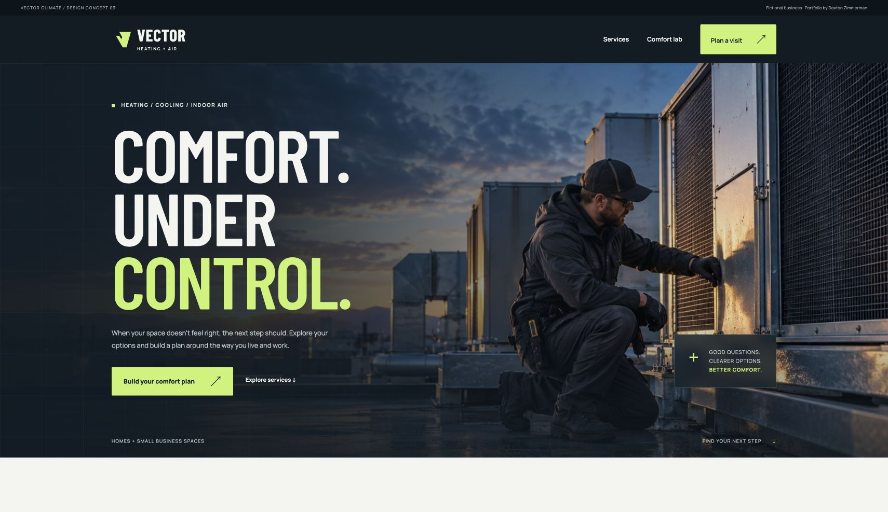

VECTOR / FICTIONAL WEBSITE CONCEPT
A mockup for a fictional HVAC company, focused on the details and helping people find what they need.

VECTOR CLIMATE / HTML, CSS, JAVASCRIPT, SVG
Visitors can start with a repair, a replacement, or a comfort problem. The site helps them explore the option that fits what they’re looking for.
THREE THINGS TO EXPLORE
Try repair, replacement, or comfort and see how the next step changes.
Use the diagram to compare equipment and heating or cooling modes.
Choose a project, priority, and timing, then review or download the summary.
FOR A REAL BUSINESS
The planner gathers a visitor’s choices into a short project brief. For a real business, we’d connect that handoff to its inquiry or booking system.
Fictional business concept. The demo doesn’t send inquiries or book appointments. The photography is AI-generated.
Website work for your business